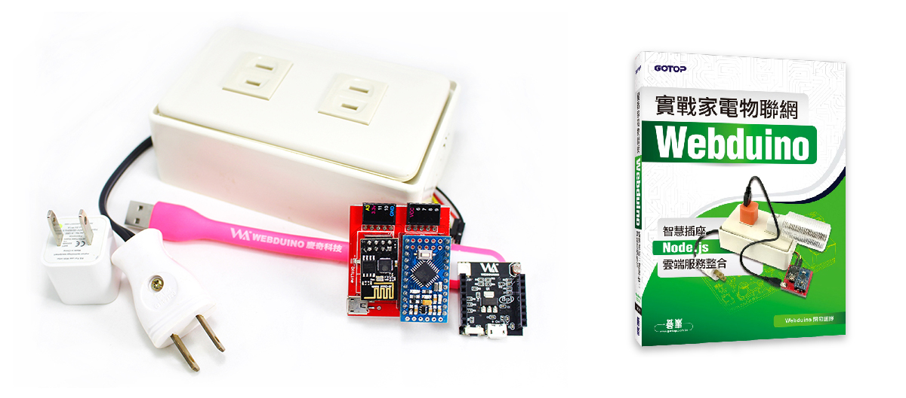
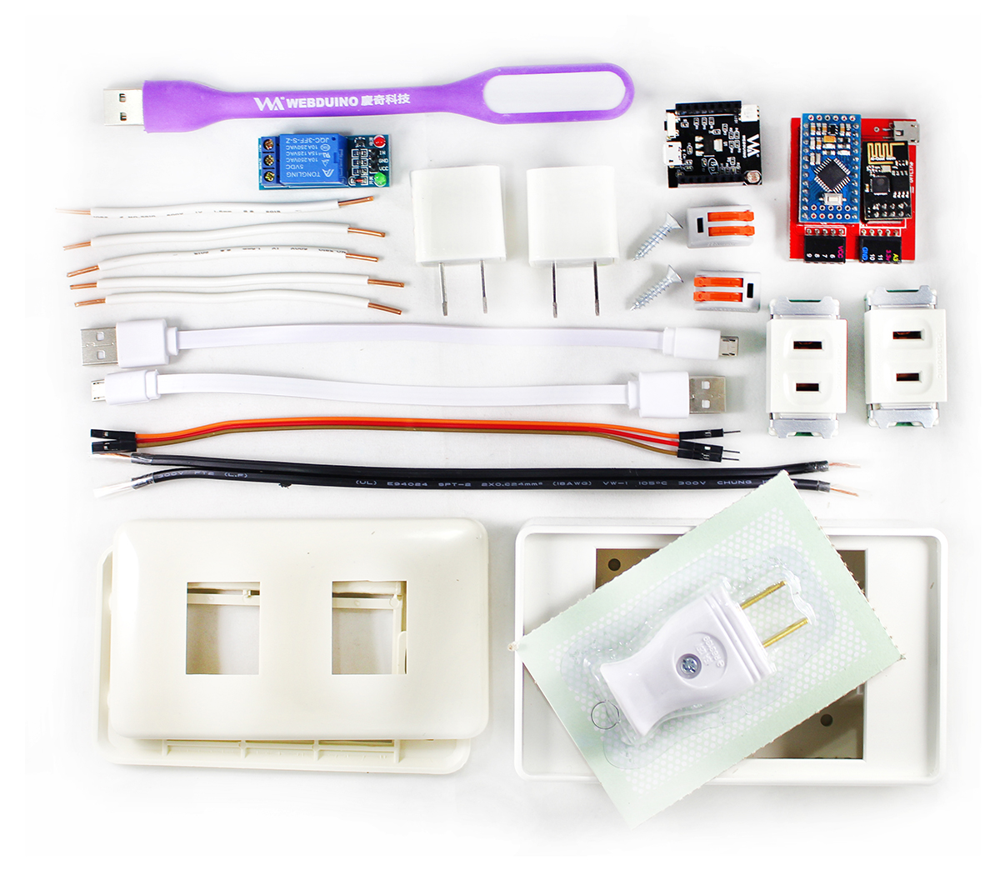

Webduino 智慧插座 - 經濟實惠套件
本套件內含兩塊 Webduino 開發板（ 馬克一號、Smart ）與智慧插座套件，透過此套件不僅一次玩轉兩塊開發板，進而學習兩塊板子互動、溝通，當環境光源不足時，智慧插座上的燈泡就亮起來，當溫度過高時，燈泡自動熄滅，亦或是結合雲端服務 ( Google 試算表 / Firebase ) 將智慧插座的狀態記錄下來。您可以搭配 實戰家電物聯網 一書，真正落實雲端監控、智慧生活，超適合想多方嘗試的你下手搶購哦！
產品特色：
- * 支援 WiFi、藍芽、序列阜等操控方式
- * 支援跨平台控制（ 手機 / 平板 / 電腦）
- * 支援數十種控制方式（ 聲控 / 語音朗讀 / 顏色 / 人臉 / 定時關燈 / 人體紅外線偵測 ... ）
- * 支援兩塊開發板互動
- * 可自行組裝 & 學習
- * 聰明管理你的生活
售價：
新台幣 1,680 元整 ( 原價 1,900 元，優惠期限至 2017/11/17 )
此預購活動為碁峰獨家組合，詳情可參考「碁峰購物網」活動頁面並下單購買。歡迎政府機關、教育單位或公司行號採購，如需統一編號，可於訂單備註中說明。
產品內容：
- 1. Webduino Smart x1
- 2. Webudino 馬克一號 x1
- 3. Webduino 雙孔插外盒 x1
- 4. 底板 x1
- 5. 上層夾板 x1
- 6. 螺絲 x2
- 7. 插座 x2
- 8. 單心線 x5
- 9. 插頭 x1
- 10.插頭電線 x1
- 11.快速接頭 x2
- 12.杜邦線 ( 公母 ) x3
- 13.繼電器 x1
- 14.USB 接頭 x2
- 15.USB LED燈 x1
- 16.USB 傳輸線 x2
產品照片：

